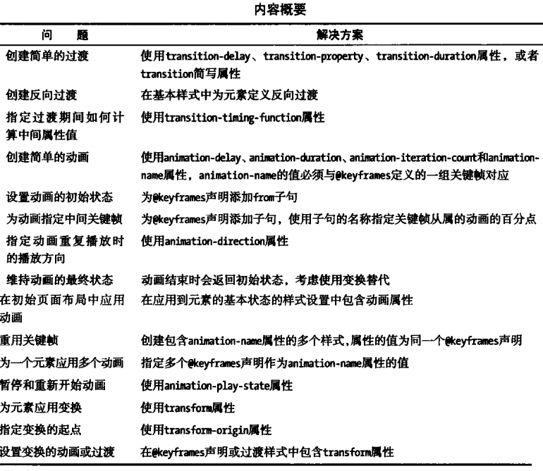
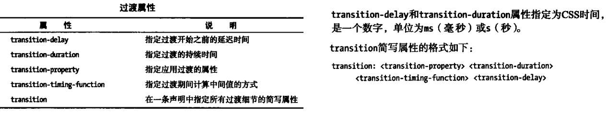
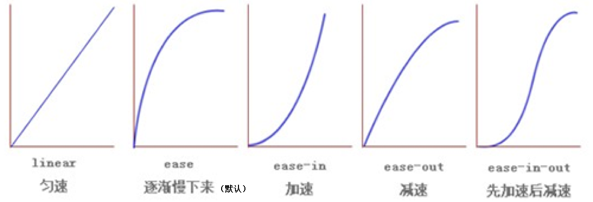
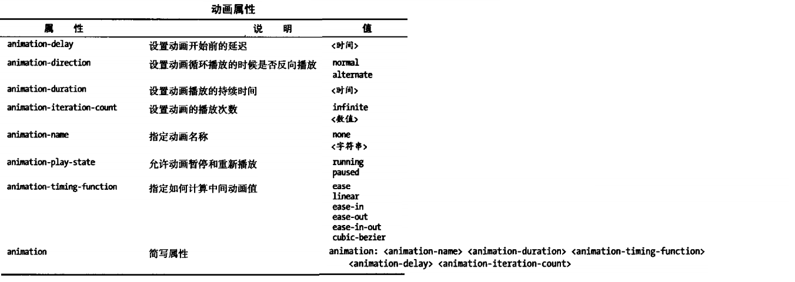
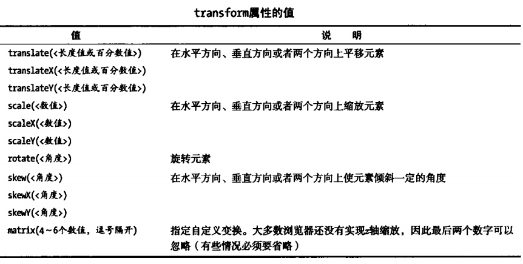
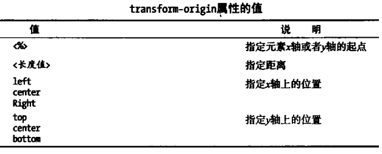

使用过渡、动画和变换
1、使用过渡

过渡效果一般是鼠标悬停时表现出来的一种效果，一般用伪类选择器:hover改变CSS属性来实现。
1.1、过渡三要素
1.1.1必须要有属性发生变化
1.1.2必须告诉系统哪个属性需要执行过渡效果
1.1.3必须告诉系统过渡效果持续时长
1.2、注意点
当多个属性需要同时执行过渡效果时用逗号隔开即可

当transition属性仅放于:hover选择器之中时，过渡效果只有正向过渡，即鼠标一离开元素，立即恢复原始状态，没有反向过渡效果，如下面的红色正方形元素，如果需要两向都有过渡效果，需要在原始状态选择器中添加transition属性，或原始状态选择器和伪类选择器都加上transition属性，如下面的绿色正方形。
transition-time-function属性的5个值曲线图：

曲线运动效果：
- linear
- ease
- ease-in
- ease-out
- ease-in-out
1.3、过渡连写格式
transition: 过渡属性 过渡时长 运动速度 延迟时间;
1.4、过渡连写注意点
2.1和分开写一样, 如果想给多个属性添加过渡效果也是用逗号隔开即可
2.2连写的时可以省略后面的两个参数, 因为只要编写了前面的两个参数就已经满足了过渡的三要素
2.3如果多个属性运动的速度/延迟的时间/持续时间都一样, 那么可以简写为：transition:all 0s;
1.5、编写过渡套路
3.1不要管过渡, 先编写基本界面
3.2修改我们认为需要修改的属性
3.3再回过头去给被修改属性的那个元素添加过渡即可
1.6、过渡模块案例展示：弹性效果、手风琴效果
2、使用动画
动画的创建需要包含两部分，一个是动画的CSS属性，另一个是动画关键帧,动画关键帧使用@keyframes创建，@keyframes定义动画的名称以及动画的关键帧。
动画关键帧有大致可分为3种：
1.仅指定最后一帧；
@keyframes animationname{
to{...}
}
2.指定初始和结束帧；
@keyframes animationname{
from{...}
to{...}
}
3.指定中间帧。(0%和100%可分别代替from和to)
@keyframes animationname{
from{...}
50%{...}
75%{...}
to{...}
}

往返无限动画示例：
动画是有一定的状态的:1.等待状态、2.执行状态、3.结束状态
animation-fill-mode作用:指定动画等待状态和结束状态的样式
取值:
none: 不做任何改变
forwards: 让元素结束状态保持动画最后一帧的样式
backwards: 让元素等待状态的时候显示动画第一帧的样式
both: 让元素等待状态显示动画第一帧的样式, 让元素结束状态保持动画最后一帧的样式
animation-fill-mode属性示例
1.动画模块连写格式
animation:动画名称 动画时长 动画运动速度 延迟时间 执行次数 往返动画;
2.动画模块连写格式的简写:animation:动画名称 动画时长;
3.动画案例展示：云层效果、无限滚动
3、使用变换
所谓变换，就是旋转、缩放、倾斜和平移某个元素

trandform-orgin属性允许指定变换的形变中心点。指定形变中心点需要为x轴和y轴各定义一个值，默认值为元素的中心（center center）。

旋转轴向:默认情况下所有元素都是围绕Z轴进行旋转,rotate(45deg)等同于rotateZ(45deg);
想围绕哪个轴旋转, 那么只需要在rotate后面加上哪个轴即可
当旋转轴向改为x轴或，y轴时，透视属性可以改善视觉效果：
1.什么是透视
近大远小
2.注意点
一定要注意, 透视属性必须添加到需要呈现近大远小效果的元素的父元素上面
综合练习-翻转菜单:
我是文字我是文字我是文字我是文字我是文字我是文字我是文字我是文字我是文字我是文字我是文字我是文字我是文字我是文字我是文字我是文字我是文字我是文字我是文字我是文字我是文字我是文字我是文字我是文字我是文字我是文字我是文字我是文字我是文字
正常情况下的转换是2D转换，此外还有3D转换
什么是2D和3D
2D就是一个平面, 只有宽度和高度, 没有厚度
3D就是一个立体, 有宽度和高度, 还有厚度
默认情况下所有的元素都是呈2D展现的
2.如何让某个元素呈3D展现
和透视一样, 想看到某个元素的3d效果, 只需要给他的父元素添加一个transform-style属性, 然后设置为preserve-3d即可
正方体/长方体、3D旋转练习